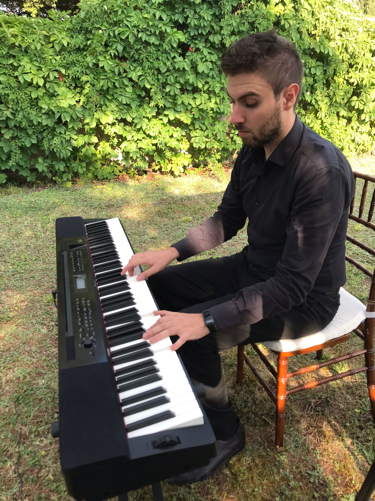
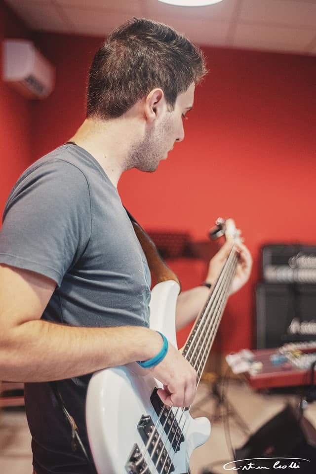

PhD in Information Engineering & Science, University of Siena,
Thesis: "Theoretical properties of Graph Neural Networks",
Supervisors: Prof. Maria Lucia Sampoli, Prof. Franco Scarselli, Prof. Monica Bianchini,
Expected defense: April 2024.
April 17, 2020: Master Degree in Applied Mathematics, University of Siena,
Thesis: "Towards the determination of threshold in neural networks", Supervisor: Prof. Luca Chiantini,
Grade: 110 cum laude.
February 22, 2018: Bachelor degree in Mathematics, University of Siena, Thesis: Studio della decomposizione ai valori singolari
applicata alla ricostruzione di modelli 3D (A study on singular value decomposition and its application
on 3D Models Reconstruction), Supervisor: Prof. Maria Lucia Sampoli, Grade: 110 cum laude.
November 26, 2015 Bachelor degree in Violin, Istituto Superiore di Studi Musicali "R. Franci"
Thesis: La seconda sonata per violino BWV 1003 di J. S. Bach: Isotropia polifonica e sintassi tonale.
(J.S.Bach Second Violin Sonata BWV 1003: Polyphonical isotropy and tonal syntax),
Supervisor: Prof. A. Anichini, Grade: 106.
Research
I'm a postdoc researcher at MathLab, SISSA, since February 2024.
My research interests are focused on, but not limited to, mathematical foundations of Deep Learning models; in particular I've been focusing on the
approximation universality and generalization capabilities of Graph Neural Networks. Moreover, I've been working on numerical models for PDE,
exploring the field of Scientific Machine Learning and in specific of Physics Informed Neural Networks.
Publications
Peer-reviewed journals
Falini, A., D'Inverno, G. A., Sampoli, M. L., & Mazzia, F. (2023). Splines Parameterization of Planar Domains by Physics-Informed Neural Networks. Mathematics, 11(10), 2406. (link)
D'Inverno, G. A., Brunetti, S., Sampoli, M. L., Muresanu, D. F., Rufa, A., & Bianchini, M. (2021). Visual Sequential Search Test Analysis: An Algorithmic Approach. Mathematics, 9(22), 2952. (link)
Submitted
D'Inverno, G. A., Bianchini, M., Sampoli, M. L., & Scarselli, F. (2021). On the approximation capability of GNNs in node classification/regression task. Soft Computing, Accepted (arXiv:2106.08992). (link)
Beddar-Wiesing, S., D'Inverno, G. A., Graziani, C., Lachi, V., Moallemy-Oureh, A., Scarselli, F., & Thomas, J. M. (2022). Weisfeiler-Lehman goes Dynamic: An Analysis of the Expressive Power of Graph Neural Networks for Attributed and Dynamic Graphs. Neural Networks, Accepted (arXiv:2210.03990). (link)
D'Inverno, G. A., Brugiapaglia, S., & Ravanelli, M. (2023). Generalization Limits of Graph Neural Networks in Identity Effects Learning. Neural Networks, submitted (arXiv:2307.0013). (link)
Bucarelli, M. S., D'Inverno, G. A., Bianchini, M., Scarselli, F., & Silvestri, F. (2024). A topological description of loss surfaces based on Betti Numbers. Neural Networks, submitted (arXiv:2401.03824). (link)
Chiantini, L., D’Inverno, G. A. & Marziali, S. (2024). Product Of Tensor and Description of Networks. MEGA24, submitted (arXiv:2402.06768). (link)
D'Inverno, G. A., & Dong, J. (2024). Extension of Recurrent Kernels to different Reservoir Computing topologies. Neurocomputing, submitted (arXiv:2401.14557). (link)
Music
Collaborations
2012 - 2024: First Section violin, Filarmonica di Lucca
2010 - 2024: First Section violin, Orchestra Città di Grosseto
2018 - 2023: First Section violin, Philarmonie Orchestra, Campi Bisenzio
2016 - 2022: External Section violin, ISSM "R. Franci", Siena
2020 - 2023: First Section violin, Orchestra AMAT
2021 - 2023: Second Section violin, Ensemble Symphony Orchestra
Teaching
November, 2019 - June 2020: Violin Teacher (Co.Co.Co) at Fondazione Grosseto Cultura
January 7, 2020 - February 6, 2020: Violin Teacher at Istituto di Istruzione Superiore Polo Luciano Bianciardi
About me
I am a Christian, all my lifestyle is based on my faith. Here's a recording of an old, yet beloved hymn me and my sister recorded back in summer 2020:
I enjoy playing a lot of instruments besides the violin: viola, piano, electric bass, guitar, ukulele, and last but not least, the mandolin.


I really enjoy hiking, and I'm in love with the Swiss mountains!